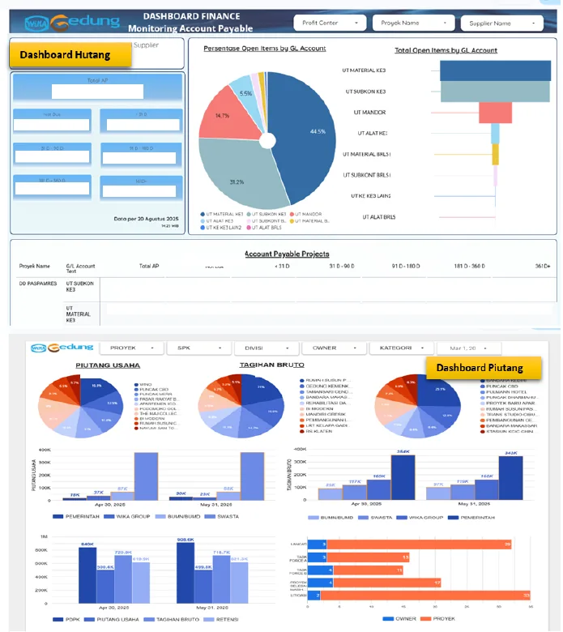
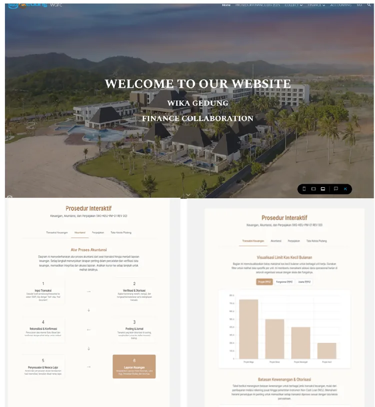
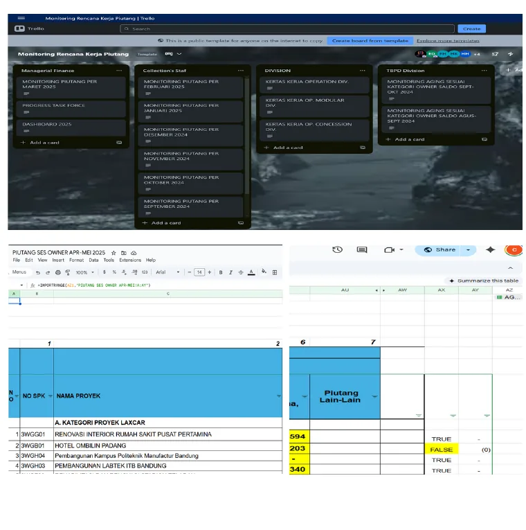
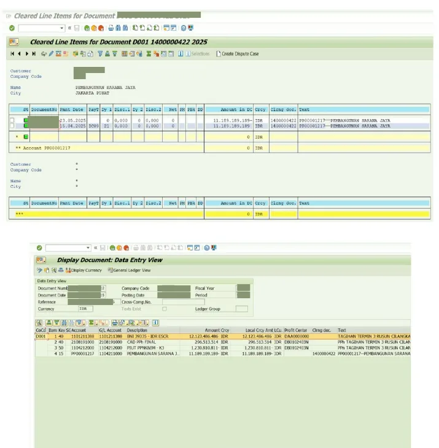
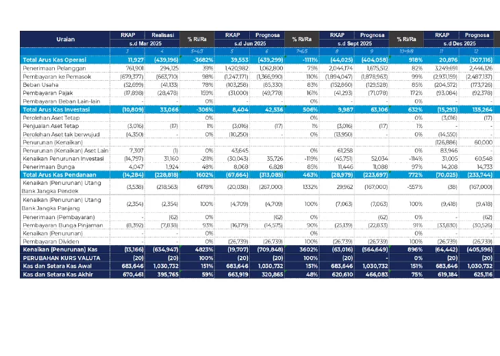

01 / Featured
AR & Collection Dashboard
Designed an interactive management dashboard to monitor receivables, billings, retention, project ownership, and collection priorities in one view.
Accounting • Finance • Data Analytics
Accounting & Finance professional with hands-on experience in financial reporting, budgeting, accounts receivable, SAP S/4HANA, and data-driven dashboards.
About
I work across financial reporting, budgeting, project finance, accounts receivable, reconciliation, and collection monitoring. I also build practical reporting tools that turn operational finance data into structured dashboards and management-ready views.
My experience spans corporate and project environments, including construction projects, where accuracy, deadlines, cash flow visibility, and cross-functional coordination are essential.
Selected Projects

01 / Featured
Designed an interactive management dashboard to monitor receivables, billings, retention, project ownership, and collection priorities in one view.

02
Centralized SOPs, job descriptions, dashboards, and finance references into a single internal hub.

03
Built a master Google Sheet to consolidate AR tracking data from multiple project files automatically.

04
Managed AR journal posting, reconciliation, aging monitoring, collection reporting, and month-end support.

05
Consolidated annual budgets, monitored monthly utilization, and prepared cash flow and variance views.
Experience
Selected milestones from the full CV.
Staff of Finance, Collecting, and Accounting
AR cycle, SAP S/4HANA, annual budgeting, monthly cash flow consolidation, AR dashboards, and aging reports.
Accounting and Finance Staff
Financial statements, vendor invoices, project payments, petty cash, reconciliations, and collection coordination.
Accounting and Finance Staff
Project accounting, financial reporting, tax payments, budgets, operational finance, and project administration.
Accounting Staff / Marketing Staff
Financial reporting, budgeting, administration, expenditure control, and earlier marketing support.
Education
Universitas Islam Sultan Agung
2013 — 2015 • GPA 3.31 / 4.00Education
Universitas Diponegoro
2010 — 2013 • GPA 3.40 / 4.00Training
TOEFL ITP 580 • Supervisory Skills • Basic Financial Modelling
2024 — 2025Contact
For professional opportunities or collaboration, contact me directly.